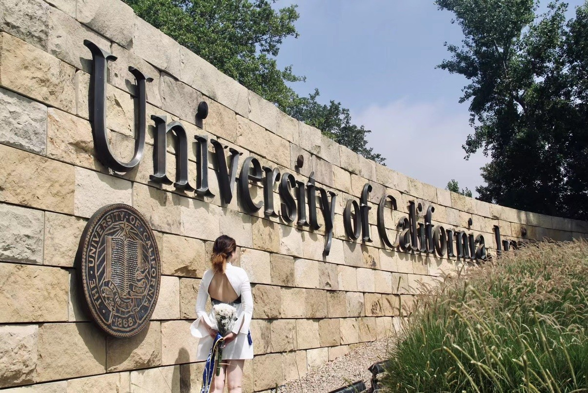
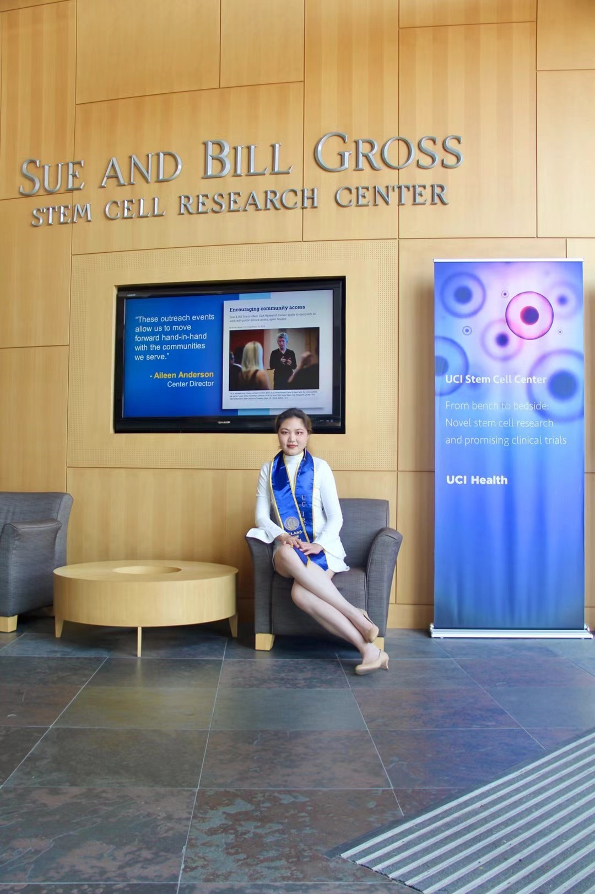
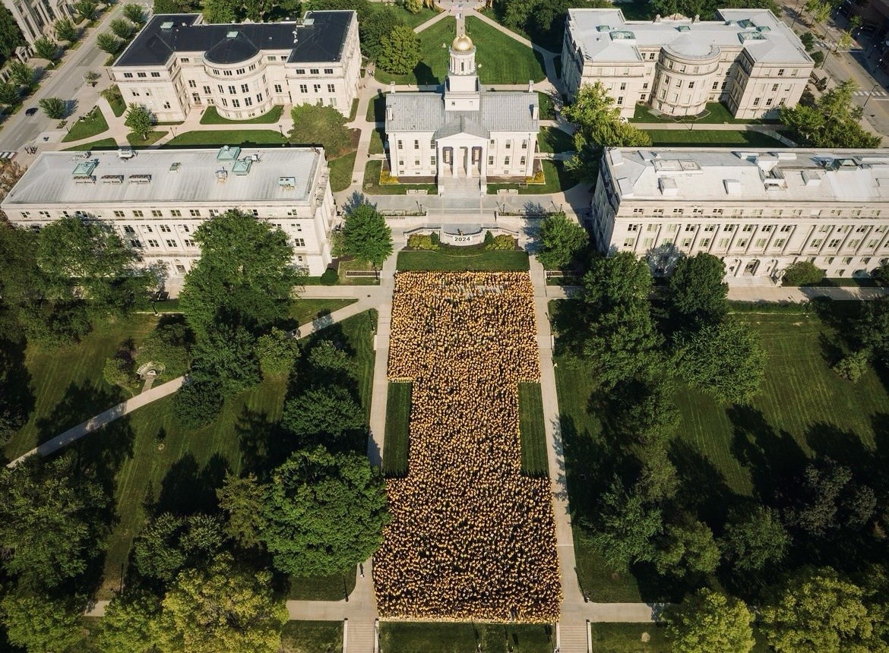

RNA biology and AGO2 eCLIP
Building human miRNA-mRNA interaction resources and CLIP-seq workflows on SGE/HPC.
Ph.D. Candidate · Molecular Medicine · University of Iowa
A molecular medicine Ph.D. student growing into the space between bioinformatics, molecular biology, translational medicine — and life sciences consulting.

Profile
Before I entered science, I was drawn to the humanities. In high school, I loved history, geography, Chinese literature and writing because they helped me understand people, society and change.
When I began college in the United States, I first explored sociology and ecology. I cared about human systems and the natural world, but I also felt the limits of simply describing environmental decline. I wanted to work in a field where discovery could become intervention, so I moved into biology and began asking how research could contribute to medicine.
Since then, each transition has made my work more interdisciplinary: neuroscience and wet-lab training, health informatics during the COVID era, data science and AI, deep learning in genomics, and now a Ph.D. project that is half experimental and half computational. I keep moving toward the same long-term question: how can biological data become mechanisms that improve health?
Building human miRNA-mRNA interaction resources and CLIP-seq workflows on SGE/HPC.
Applying Python, R, machine learning and statistical genetics to biological questions.
Preparing for roles that connect molecular biology, large-scale data and drug discovery.

Journey
I was strongest in history, geography, literature and writing. That background still helps me communicate science and see research questions in a broader social context.
I began with sociology and ecology, then moved into biological sciences because I wanted to contribute to medicine through a field that changes quickly and creates new tools.
In retinal and neuroscience research, I learned experimental discipline, model systems and the reality of turning biological questions into measurable evidence.
Statistics, COVID-era public health, coding and AI pushed me toward health informatics, deep learning genomics and now a 50/50 wet-dry Ph.D. project in RNA biology.






About me
I am a PhD candidate in Molecular Medicine at the University of Iowa, working where RNA biology meets bioinformatics. My thesis maps how AGO2, microRNAs, and messenger RNAs interact in real human heart tissue — the first map of its kind — to understand atrial fibrillation, the most common heart rhythm disorder, and to find new therapeutic targets.
But the question that has followed me through every change of field is simpler than any of that: how does biological data become medicine? How does something we measure in a lab become something that changes a patient's life? Every turn I have taken has been an attempt to get closer to an answer.
In China, I studied the humanities. In high school, I was strongest in history and geography — I loved them, and I was good at them — because they taught me how to think: how to see people inside systems, how change actually happens, and how to put a complicated idea into words someone else can follow.
I still use that training every day. Science is often described as a technical skill, but most of science is communication — explaining why a result matters, persuading people to care, and turning data into a story that leads to a decision. The humanities gave me that before biology gave me anything else.
When I came to the United States for college, I started in sociology and ecology. I cared about human systems and the natural world. But I kept running into the same frustration: I could describe a problem — a declining ecosystem, a broken system — without being able to fix it. I wanted to work in a field where discovery could become intervention.
So I moved into biology. At UC Irvine I majored in biological sciences, and I fell for neurobiology. I joined the Seiler Lab at the Sue and Bill Gross Stem Cell Research Center, where we studied age-related macular degeneration — testing whether retinal organoids grown from human embryonic stem cells could help a degenerating retina. My days were electrophysiology, staining, behavioral tests, and imaging: electroretinograms, immunohistochemistry, OCT, and watching how rats responded to what they could see. I was promoted to research assistant, ran my own projects, and mentored younger students. I also won an Excellence in Research Award and made the Dean's Honor List.
Then COVID came, and for almost two years I worked mostly alone. The lab was nearly empty. I have lived with depression for years, and the empty lab made it heavier. It was the hardest stretch of my training — lonely, slow, and uncertain — and getting through it taught me something no course could: how to keep going when no one is watching.
Presenting a poster during that time made something else clear: I could run an experiment, but I could not yet fully speak the language of the data behind it. I needed more statistics, and stronger data skills. So I added a minor in health informatics — and that one decision rerouted my career.
After Irvine I went to Weill Cornell Medicine in New York for a master's in health informatics. I learned programming, data management, AI, and health insurance policy — the machinery that turns medical data into decisions.
While I was finishing my master's, I started working across the street at Rockefeller University, in the Zhao lab, on computational genetics and genomics. We used deep convolutional neural networks to predict where chromatin opens up — which parts of the genome are accessible and ready to be read — across three fruit fly species. That work became a paper in Genome Biology.
That was the moment the two halves of my training clicked together: the wet lab had taught me how biology is measured; the dry lab taught me how it is read at scale.
Now, at the University of Iowa, I work in the Boudreau lab on a project that is half experimental and half computational — half wet, half dry. My thesis uses eCLIP sequencing to draw a map of AGO2–miRNA–mRNA interactions in human heart tissue, and to ask which of those interactions carry genetic risk for atrial fibrillation. It is detailed, technical work — but I think of it as cartography: making a map of a place no one has mapped before, so that others can navigate it toward treatments.
The project runs the whole arc: preparing real human tissue samples, running the experiments, analyzing the data, linking what we find to clinical phenotypes, and explaining the biology — including the functions of variants no one understands yet. And it is growing into something bigger than a thesis: a database, with a website to share the data openly. It may become intellectual property, even patents. My hope is that these variants become molecular diagnostic tools — a way to test patients for many different diseases. The goal is 12 human tissues: the world's first human miRNA database.
Along the way I have also worked on pan-cancer multi-omics, Alzheimer's metabolomics biomarkers, and the evolution of chromatin accessibility — each one a different way of asking the same question: what does the data say, and what should we do about it?

Iowa also gave me something I did not expect: serious training in translational medicine — how science moves from the bench to the bedside. And that raised a new question for me: translation needs more than science. It needs venture capital, technology transfer, seed incubators — the business machinery that turns a discovery into a drug. I realized I did not know that world at all.
So I began learning business the way I learned bioinformatics: by myself, and on my own money. I paid for business courses out of my own pocket. I use AI as a study partner — to explain concepts, to argue with, to test my thinking. I practice case interviews, the way consultants learn to structure a messy problem and defend a recommendation. I follow the industry the way I follow the literature: McKinsey reports, STAT news, trial readouts — because in consulting, as in science, you cannot think clearly about a field you do not follow.
In a healthcare case competition, my team reached the semifinals.
I am still early in this turn. But I have done this before — humanities to biology, wet lab to dry lab — and each time, the new field has made the old ones more useful, not less. Biology taught me mechanism. Data taught me evidence. Business is teaching me decisions: how to weigh trade-offs, how to see a whole market instead of a single molecule, and how to turn an analysis into an action.
I have always liked building things for other students. At UC Irvine I served on the executive board of the BioSci International Student Association, running its social media. At Iowa I am president of the Association of Multicultural Scientists — I organize 20+ events for over 400 students — and communication director of the International Student Advisory Board, where I advocate for international students, help prepare resources for students before they arrive, and organize events like Fresh Check Day, Mental Health Day, and Chinese New Year. I have also volunteered with the American Red Cross, at blood drives and disaster preparedness trainings.
Mental health is personal for me. Therapy has helped my depression get better, and I want to help more people find their way out of it too. That is part of why I do this work: science is not only about discoveries, it is about the people doing the discovering — and they deserve support.
A bioinformatician I admire, Tommy Tang, taught himself programming in the fourth year of his PhD, when a spreadsheet could not open his data. He quotes a line I have kept: looking back, the dots connect, even when they do not make sense looking forward. His path — wet lab to command line, biologist to computational biologist — is the shape of my own path, one field further along.
Humanities taught me to communicate. The wet lab taught me to respect evidence. Data taught me to think at scale. Business is teaching me to decide. None of those steps was a detour. They were all preparation for the same job: connecting computation, mechanism, and medicine — and now, the business of getting medicine to patients.
Outside the lab, I am usually at a theatre, or on the road. I have seen at least a hundred live shows — musicals, plays, opera — and I still get excited every time the lights go down. I also dance. And I like to travel: so far I have been to eight countries, and I plan to keep adding to that list. Science is what I do; the stage and the road are what refill me.
I also work out — I have lost about 20 kilograms since I started my PhD — and I share my home with a cat.

Right now I am doing three things at once: pushing my PhD research forward, building up business knowledge, and laying the groundwork for turning science into business. I want to work in biotech or pharma as a scientist who understands both biological mechanisms and computational evidence — and who can also see the strategy: which program to prioritize, which patients to serve, which path makes a therapy real. If you are building something at that intersection — a drug, a diagnostic, a team, a decision — I would like to talk.
Everything on this page started the same way: with curiosity. I follow the question, and the question keeps moving.
Skills
Neuroscience, retinal models, imaging, electrophysiology, IHC/IFA, Western blotting and experimental troubleshooting.
CLIP-seq, RNA-seq, scRNA-seq, ATAC-seq, small RNA analysis, pipeline design and SGE/HPC workflows.
Python, R, machine learning, deep learning, statistical modeling, health informatics and clinical data thinking.
Teaching, mentoring, peer review, student organization leadership and cross-cultural scientific communication.

Selected Evidence
Genome Biology, 2023 · co-author · doi:10.1186/s13059-023-03079-5
ICBBS ’25 / ACM, 2026 · doi:10.1145/3778067.3778071
ICHSM 2026 · accepted
Future Goal
I hope to work in biotech or pharma as a scientist who understands both biological mechanisms and computational evidence. I want to help teams move from large-scale data to clearer hypotheses, stronger experiments and better therapeutic decisions.
Hover or tap a word to see how I connect it.